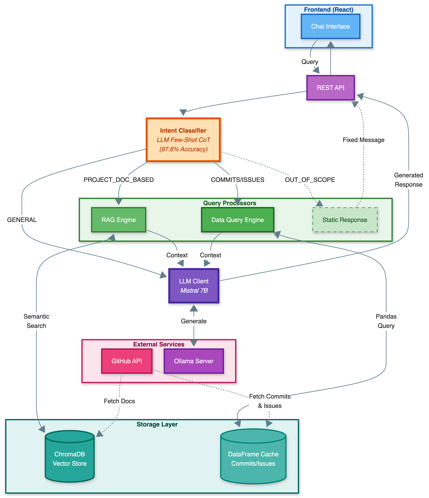

Watch RepoWise in action as we demonstrate its key features, including repository indexing, natural language querying, and evidence-grounded response generation.
Open-source software (OSS) projects often face challenges in governance, sustainability, and contributor onboarding.
Traditional analytics provide static metrics but lack interpretability and interactivity. RepoWise
introduces a conversational framework powered by large language models (LLMs) that performs forensic-style reasoning
over OSS repositories. It enables natural-language dialogue around key project documents—such as governance.md,
contributing.md, and README.md—to surface insights into project health, sustainability risks,
and actionable next steps.
By combining conversational AI with OSS analytics, RepoWise offers an interpretable, interactive approach to understanding the social and technical dynamics of open-source development. The system automatically extracts and indexes governance documents, contribution guidelines, commit data, and issue reports from GitHub repositories, then uses an LLM-based Few-Shot Chain of Thought (CoT) intent classification with dual retrieval engines to generate context-grounded, evidence-backed responses.
We’d really appreciate your thoughts on this tool. Please share your feedback here: https://forms.gle/GUQyYY6SijDbtUVe9
Watch RepoWise in action as we demonstrate its key features, including repository indexing, natural language querying, and evidence-grounded response generation.
Can't see the video? Watch on YouTube
The system architecture of RepoWise integrates the aforementioned modules into a cohesive, multi-layered design that connects the user interface, backend services, retrieval engines, storage subsystems, and external APIs. Figure 1 illustrates this architecture and traces the flow of data from user query to final response.
At the top of the stack, the Frontend Interface enables query submission and response visualization. The frontend communicates with the backend through asynchronous HTTP requests. The Backend Core, implemented using FastAPI, serves as the central orchestrator that manages intent classification, query routing, retrieval invocation, and prompt assembly. Within the backend, the Intent Classifier applies the classification pipeline described earlier and dispatches the query to the appropriate processing module based on the predicted intent.
The Query Processing Layer consists of three components: the RAG Engine, the
Structured Analytics Engine, and a Static Response Handler. When the intent is
PROJECT_DOC_BASED, the RAG Engine retrieves semantically relevant documentation fragments from
ChromaDB. When the intent is COMMITS or ISSUES, the Structured Analytics Engine performs
computation over structured repository activity data obtained from the GitHub API. For
OUT_OF_SCOPE queries, a fixed response is returned without invoking the LLM. For
GENERAL queries, the request is routed directly to the LLM client.
Once the prompt is assembled, it is sent to the LLM Client, which interfaces with the local
Mistral 7B model hosted by the Ollama server. The model generates an evidence-grounded response,
which is streamed back to the backend. The Response Delivery Layer then formats the output, attaches
provenance metadata, and returns the response to the frontend.
Beneath the query processing layer, the Storage Layer manages persistent data across the ChromaDB vector store, the structured analytics cache, and the raw repository file cache. This layer synchronizes periodically with the GitHub API to ensure data freshness and supports efficient access for repeated queries.
Finally, the External Services layer includes the GitHub API, which supplies live repository data, and the Ollama inference server, which hosts the local LLM instance. These services are accessed securely via REST endpoints to minimize latency and preserve privacy during inference.
Overall, RepoWise embodies a fully integrated, retrieval-augmented architecture in which classification, data acquisition, and reasoning operate in concert. The system’s modular design enables straightforward extension to new data sources, query types, or analytical capabilities, supporting future research and practical deployment at scale.

Figure 1: RepoWise system architecture (click to enlarge)
The Intent Classification Module is the cognitive core of RepoWise. It determines how each user query should be processed by identifying its semantic intent and routing it to the corresponding retrieval engine. The classification mechanism uses a hybrid approach: keyword-based detection for out-of-scope queries combined with LLM-based Few-Shot Chain of Thought (CoT) prompting for all other intents, achieving 97.6% accuracy.
When a user submits a natural language query to RepoWise, the system transforms it through a carefully orchestrated pipeline that ensures responses remain grounded in actual repository data while being tailored to the specific information need. This appendix details the complete prompt engineering approach, explaining both the technical implementation and the reasoning behind each design decision.
The prompt engineering pipeline in RepoWise operates in three stages: intent classification, context retrieval, and response generation. Each stage employs specialized prompt templates designed to address a fundamental challenge in conversational repository analysis: how to produce accurate, verifiable answers without hallucinating information that does not exist in the project’s artifacts.
We deliberately chose a multi-stage architecture over a single end-to-end prompt because different query types require fundamentally different retrieval strategies. A question about contribution guidelines requires semantic search over documentation, while a question about top contributors requires aggregation over structured commit data. Attempting to handle both with a single retrieval mechanism would compromise accuracy for at least one query type.
The first stage determines which retrieval engine should handle the query by classifying it into one of five intent
categories: PROJECT_DOC_BASED, COMMITS, ISSUES, GENERAL, or
OUT_OF_SCOPE. This classification is critical because it routes the query to the appropriate data source
and prompt template.
Rather than relying on simple keyword matching or a fine-tuned classifier, RepoWise employs a Few-Shot Chain-of-Thought (CoT) prompting strategy. We chose this approach because repository queries often contain semantically ambiguous phrases that require reasoning to disambiguate. For example, “Who are the core developers?” requires aggregation over commit history to rank contributors by activity, while “How can I start contributing?” requires semantic search over documentation to retrieve contribution guidelines and onboarding procedures.
The classification prompt begins by establishing the task and defining each category with precise boundaries:
You are an intent classifier for a GitHub repository Q&A system.
TASK: Classify the user query into exactly ONE category.
Think step-by-step about what information is needed
and where it would be found.
CATEGORIES:
- PROJECT_DOC_BASED: Questions about governance, contribution
guidelines, maintainers, licenses, policies, code of conduct
- COMMITS: Questions about commit history, contributors by
code/commits, file modifications, development activity
- ISSUES: Questions about bug reports, feature requests,
issue reporters, open/closed issues, issue statistics
- GENERAL: Generic programming questions not specific to
this repository
- OUT_OF_SCOPE: Greetings, off-topic queries, questions
about the assistant itselfThe prompt includes 24 carefully selected exemplars that demonstrate the reasoning process. Each exemplar shows not just the classification but why that classification is correct. We specifically chose exemplars that address common sources of confusion like below:
Query: "Who are the top 5 contributors?"
Reasoning: "Top contributors" implies ranking by measurable
activity like commit count. This requires analyzing commit
history data, not reading governance docs.
Intent: COMMITS
Query: "Who maintains this project?"
Reasoning: "Maintainers" are explicitly defined roles documented
in MAINTAINERS.md, CODEOWNERS, or governance docs. This is
asking about documented roles, not commit statistics.
Intent: PROJECT_DOC_BASEDThis explicit reasoning serves two purposes: it guides the LLM to consider where the answer would be found (not just what the question asks), and it creates a consistent decision boundary that the model can apply to novel queries.
While the CoT approach provides high accuracy, LLM inference introduces some latency. To optimize response time
without sacrificing accuracy, RepoWise employs a hybrid architecture where certain intents are detected through fast
keyword matching before invoking the LLM. Specifically, OUT_OF_SCOPE queries (greetings, off-topic
questions) are identified through pattern matching, reserving LLM classification for queries that genuinely require
semantic reasoning. This hybrid design maintains classification accuracy above 97% while reducing latency for
straightforward cases that do not require LLM inference.
Once the intent is classified, the system retrieves relevant context using intent-specific strategies. The choice of retrieval mechanism directly impacts answer quality, and different intent types demand fundamentally different approaches.
For PROJECT_DOC_BASED queries, RepoWise performs hybrid semantic search over project documentation stored
in ChromaDB. Documents such as README, CONTRIBUTING, GOVERNANCE,
CODE_OF_CONDUCT, SECURITY, LICENSE, MAINTAINERS,
CODEOWNERS, and OWNERS are chunked, embedded using the all-MiniLM-L6-v2 model,
and indexed for similarity search.
When a query arrives, it is embedded in the same vector space, and the system retrieves the top-5 most similar
chunks. These chunks are then re-ranked using a hybrid scoring function that combines semantic similarity with two
additional factors: (1) document type prioritization (GOVERNANCE, MAINTAINERS, CODEOWNERS) for queries about project roles, and
(2) content keyword matching. For “who” queries
specifically, the re-ranker also counts GitHub username patterns (@ symbols) to prioritize documents containing
contributor identities. We found that pure semantic similarity occasionally retrieved topically related but
factually irrelevant passages; the hybrid approach mitigates this by ensuring governance documents rank higher for
governance queries.
For COMMITS and ISSUES queries, semantic search is fundamentally inappropriate. Questions
like “Who are the top 5 contributors by commit count?” require aggregation, sorting, and counting
operations that cannot be approximated through vector similarity.
Instead, RepoWise translates natural language queries into executable pandas code. This translation uses a specialized prompt that includes the complete data schema and exact query-to-code mappings:
COMMITS DATA SCHEMA - ALL COLUMNS:
| Column | Type | Description |
|--------------|----------|--------------------------------------|
| commit_sha | string | Unique commit identifier |
| name | string | Contributor name |
| email | string | Contributor email |
| date | datetime | Commit timestamp |
| filename | string | File path modified |
| lines_added | int | Lines added in this file |
| lines_deleted| int | Lines deleted in this file |
CRITICAL RULES FOR COMMITS:
1. ONE ROW PER FILE MODIFIED, not one row per commit
2. To count COMMITS: df.drop_duplicates(subset=['commit_sha'])
3. Use 'name' for contributor names, NOT 'user_login'The schema documentation is essential because the data model has non-obvious semantics. For instance, the commits table contains one row per file modified, not one row per commit. Without explicit guidance, an LLM would likely count rows rather than unique commit SHAs, producing incorrect contributor rankings. By documenting these semantics directly in the prompt, we ensure the generated code handles edge cases correctly.
The prompt also includes exact code mappings for common query patterns:
"top 5 contributors by commit count":
result = df.drop_duplicates(subset=['commit_sha'])
.groupby('name').size()
.sort_values(ascending=False)
.head(5)
.reset_index(name='commit_count')Similarly, for issues queries, the prompt includes the issues data schema:
ISSUES DATA SCHEMA - ALL COLUMNS:
| Column | Type | Description |
|--------------|----------|------------------------------------------|
| type | string | 'issue' or 'comment' - FILTER BY THIS |
| issue_num | int | Issue number (e.g., 123 for #123) |
| title | string | Issue title (only for type='issue') |
| user_login | string | GitHub username of reporter |
| issue_state | string | 'OPEN' or 'CLOSED' (uppercase) |
| created_at | datetime | When issue/comment was created |
| updated_at | datetime | When issue/comment was last updated |
| body | string | Issue/comment content text |
CRITICAL RULES FOR ISSUES:
1. Dataset has BOTH issues AND comments (check 'type' column)
2. To count ISSUES: df[df['type'] == 'issue']
3. Use 'user_login' for reporter names, NOT 'name'These mappings function as few-shot examples that demonstrate correct pandas idioms. The LLM can then generalize from these examples to handle variations like “top 10 contributors in the past 6 months” by combining the ranking pattern with a date filter.
The decision to use pandas code generation rather than semantic search for quantitative queries reflects a fundamental insight: aggregation is not retrieval. Computing “top N” requires processing the entire dataset, not finding the most similar chunks. Numeric operations demand exact values, not semantic approximations. Multi-field filtering (e.g., “open issues with more than 10 comments”) requires Boolean logic across columns. Chronological sorting is a structured operation, not a semantic one. By matching the retrieval mechanism to the query type, RepoWise ensures that quantitative queries receive computed answers rather than semantic approximations.
The final stage generates a natural language response using task-specific prompts. For repository-specific intents
(PROJECT_DOC_BASED, COMMITS, and ISSUES), each prompt is composed of five
modular components: system role, task instructions, anti-hallucination rules, retrieved context, and the user question.
Every prompt begins with a brief system role that establishes the LLM’s persona:
You are a precise document analyst for the {project_name} project.This framing is intentionally minimal but serves an important function: it primes the model to behave as an analyst extracting information from provided documents rather than a general assistant drawing on training knowledge. The word “precise” specifically signals that accuracy takes precedence over fluency or completeness.
The task instructions vary substantially based on the classified intent. We found that generic instructions produced adequate but not excellent responses; task-specific guidance significantly improved answer quality.
For WHO queries (entity extraction), the instructions emphasize pattern recognition:
TASK: ENTITY EXTRACTION - Extract names, emails, GitHub usernames
1. Search the documents for actual names, email addresses, and
GitHub usernames
2. Look for these patterns:
- Email format: "Name <email@domain>"
- GitHub format: "@username" (e.g., @fchollet, @MarkDaoust)
- CODEOWNERS format: "/path/ @username1 @username2"
- Plain names: "Maintained by: John Doe"
3. ONLY extract names/usernames that actually appear in documents
4. If NO names found, respond: "No maintainer information found
in the available documents"The explicit pattern enumeration prevents the model from hallucinating maintainer identities. By specifying exactly what formats to look for, we constrain the extraction to verifiable entities.
For HOW queries (process explanation), the instructions emphasize procedural fidelity:
TASK: PROCESS EXPLANATION - Explain step-by-step procedures
1. Provide a comprehensive explanation of the process
2. Break down into clear, numbered steps
3. Include prerequisites, requirements, or important context
4. Mention specific tools, commands, or guidelines referenced
5. Cite which documents contain each piece of informationFor COMMITS queries, the instructions emphasize data-grounded analysis:
TASK: ANALYZE COMMIT DATA
1. Answer ONLY using the commit data shown below
2. DO NOT make up or invent information
3. Include specific details (commit SHAs, author names, dates)
4. For "top N" queries: Provide exactly N items in numbered format
5. If the data doesn't answer the question, say:
"The commit data doesn't contain this information"For ISSUES queries, the instructions parallel those for commits but emphasize issue-specific details:
TASK: ANALYZE ISSUES DATA
1. Answer ONLY using the issues data shown below
2. DO NOT make up or invent information
3. Include specific details (issue numbers, titles, users, states)
4. For statistical questions, include numbers and percentages
5. For list questions, provide the COMPLETE requested list
6. If the data doesn't answer the question, say:
"The issues data doesn't contain this information"This component enables RepoWise acknowledging that missing information is preferable to fabricating plausible-sounding answers.
The rules are organized into seven categories, each addressing a specific failure mode we observed during development:
RULE 1: INFORMATION SOURCE
- Your ONLY source is the project documents provided below
- DO NOT use external knowledge or training data
- DO NOT make logical inferences beyond what is stated
RULE 2: HANDLING MISSING INFORMATION
If information is NOT in the documents, respond EXACTLY:
"The available project documents for {project_name} do not
contain information about [topic]."
DO NOT:
- Provide general knowledge answers ("typically", "usually")
- Make up specific details
- Give partial answers then admit uncertainty afterward
RULE 3: VERIFICATION PROCESS
Before stating ANY fact:
1. Locate the exact text in the documents below
2. Verify it's explicitly stated, not inferred
3. Note which document it comes from
4. Only then include it in your answer
RULE 4: ANSWER FORMAT
GOOD: "According to GOVERNANCE.md, maintainers are elected
by consensus vote."
BAD: "Maintainers are typically elected by a majority vote,
though this isn't explicitly stated."
RULE 5: NAMES, NUMBERS, AND SPECIFICS
- Only mention names, emails, numbers, or percentages that
appear verbatim in the documents
- If you cannot find a specific piece of information, say so
- Never invent examples or provide "typical" values
RULE 6: OUTPUT FORMAT
- DO NOT expose your reasoning process to the user
- DO NOT write: "Let me verify...", "Based on my analysis..."
- DO NOT mention: "ANTI-HALLUCINATION", "rules", or
"guidelines I'm following"
RULE 7: RESPONSE COMPLETENESS
- Provide COMPLETE answers with all relevant details
- Include supporting information when available
- Balance brevity with informativenessRule 2 is particularly important: it provides an exact template for acknowledging missing information. Without this template, we observed that models would often hedge (“This project likely follows standard practices...”) rather than clearly stating that the information was unavailable.
The retrieved context is formatted to clearly delineate the evidence base:
AVAILABLE GOVERNANCE DOCUMENTS FOR {project_name}:
[README] README.md:
{readme_content}
[CONTRIBUTING] CONTRIBUTING.md:
{contributing_content}
[GOVERNANCE] GOVERNANCE.md:
{governance_content}The bracketed document labels serve two purposes: they make citation straightforward (the model can simply reference “[CONTRIBUTING]”), and they establish clear boundaries between documents. For structured data queries, the context contains the pandas query results formatted as readable tables.
The prompt concludes with the user question and a generation cue:
USER QUESTION: {query}
Your answer:The phrase “Your answer:” signals the transition from instruction to generation. This consistent cue ensures predictable generation behavior across all templates.
Not all queries require repository-specific retrieval. For GENERAL queries (generic programming questions),
RepoWise invokes the LLM directly without repository context:
You are a helpful AI assistant. Answer the user's question based on your knowledge.
USER QUESTION: {query}
For OUT_OF_SCOPE queries (greetings, off-topic requests), RepoWise returns a hardcoded response without invoking the LLM at all:
"I'm a project governance assistant designed to help you open-source project documentation, contribution
guidelines, maintainers, issues, and commit history. Please
ask me questions about the selected project."This design choice reflects an important principle: when we know the query is out of scope, there is no benefit to generating a response. The hardcoded message is faster, cheaper, and more predictable than LLM generation.
Few-Shot Chain of Thought (CoT) classification achieving 97.6% accuracy in routing queries to appropriate retrieval engines
Semantic RAG for documentation and structured CSV pipeline for commits/issues data
Context-grounded responses with strict factual boundaries and evidence-backed reasoning
Forensic-style reasoning with source attribution, provenance tracking, and transparent citation of evidence
Local inference via Ollama ensures data privacy and reproducibility without sending data to external APIs
Swap LLMs via environment variables—supports Mistral, Llama 3, Gemma, Phi-3, or any Ollama-compatible model for future flexibility
Natural language dialogue with provenance metadata and source attribution
# Clone the repository
git clone https://github.com/RepoWise/backend.git
cd backend
# Create virtual environment
python -m venv venv
source venv/bin/activate # On Windows: venv\Scripts\activate
# Install dependencies
pip install -r requirements.txt
# Configure environment
cp .env.example .env
# Edit .env with your GitHub token and settings
# Optional: Change OLLAMA_MODEL to use a different LLM (e.g., llama3, gemma, phi3)
# Install Ollama (for local LLM)
curl -fsSL https://ollama.com/install.sh | sh
ollama pull mistral:7b # Or: ollama pull llama3, ollama pull gemma, etc.
# Start the server
./start_dev.sh# Clone the repository
git clone https://github.com/RepoWise/frontend.git
cd frontend
# Install dependencies
npm install
# Configure environment
cp .env.example .env
# Edit .env with backend URL
# Start development server
npm run devPOST /api/projects/add
{
"github_url": "https://github.com/facebook/react"
}POST /api/query
{
"project_id": "facebook-react",
"query": "What are the contribution guidelines?"
}{
"answer": "To contribute to React, you should...",
"sources": [
{
"file_path": "CONTRIBUTING.md",
"score": 0.89,
"content": "..."
}
],
"suggested_questions": [
"How do I submit a pull request?",
"What is the code review process?"
]
}RepoWise represents a paradigm shift in repository analytics—moving from static metrics to interactive, interpretable inquiry. By combining conversational retrieval with evidence-grounded LLM reasoning, the framework enables stakeholders to ask natural-language questions and receive contextual, verifiable answers with source citations, transforming how developers, maintainers, and researchers understand and navigate project repositories.
If you use RepoWise in your research or projects, please cite it using the following entry:
@software{RepoWise2025,
author = {RepoWise contributors},
title = {RepoWise — Repository sustainability tracker (website)},
year = {2025},
url = {https://repowise.github.io/RepoWise-website/},
}This research was supported by the National Science Foundation under Grant No. 2020751, as well as by the Alfred P. Sloan Foundation through the OSPO for UC initiative (Award No. 2024-22424).
RepoWise is developed by the DECAL Lab at UC Davis.
GitHub Organization | Backend Repository | Frontend Repository
For questions or feedback, please open an issue on our GitHub repository.
Views: ...
Registered Users: ...
Processed Repositories: ...